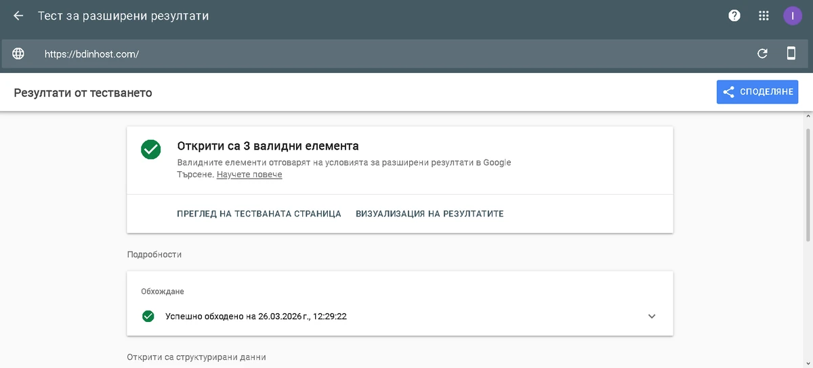
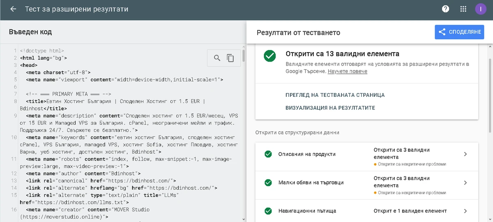
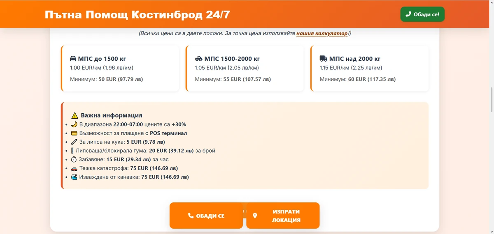
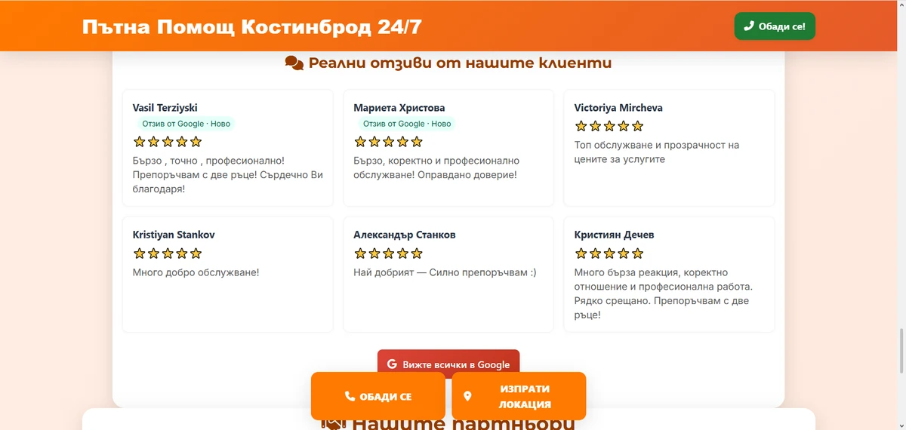
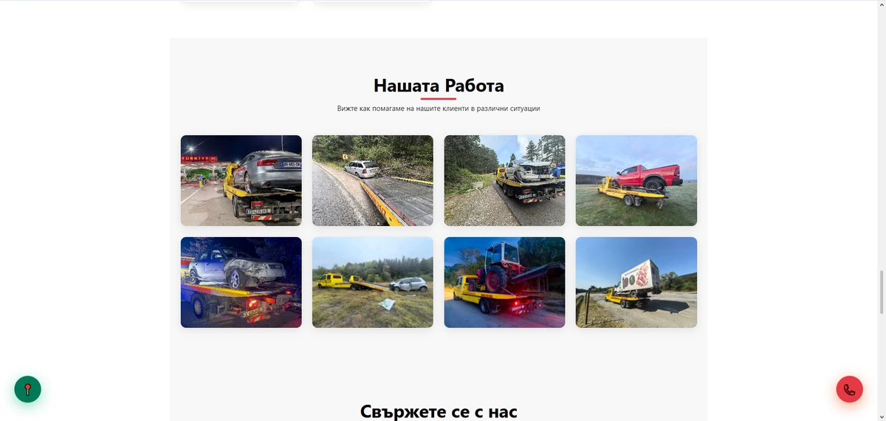
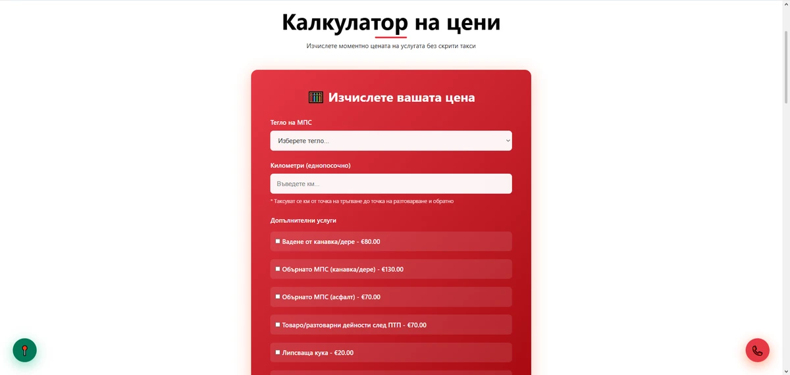
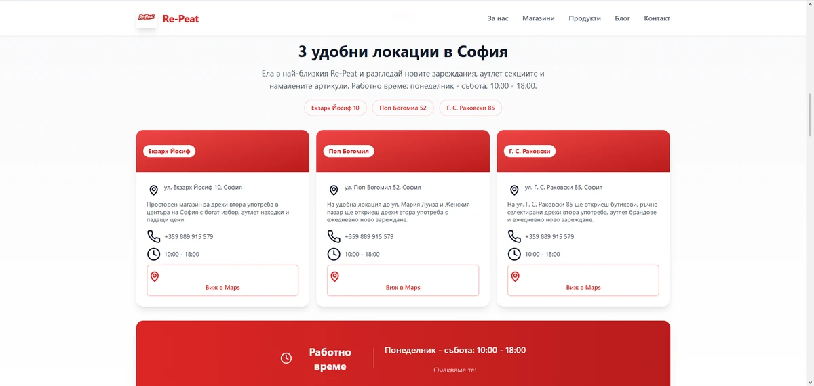
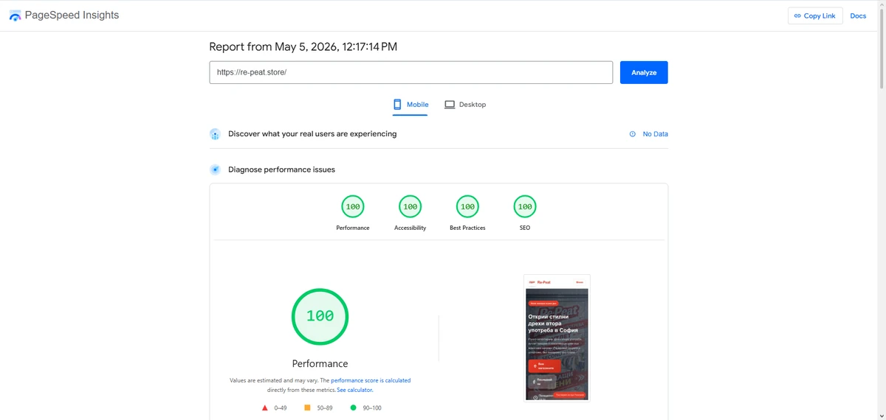
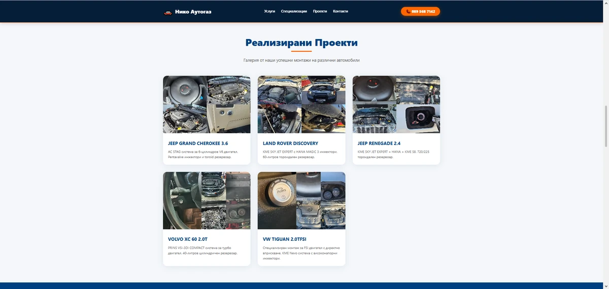

Case studies на HTML сайтове с реални резултати
Вижте как нашите HTML сайтове водят до повече доверие, по-бърза реакция и по-ясен път до контакт. Тук са проектите, които показват защо този модел продава по-добре.
Ако искаш подобен резултат за твоя бизнес, изпрати запитване или виж цената.
WordPress → HTML миграция с реални данни
Имаме и конкретен пример с BDinHost среда, където една и съща идея е тествана във WordPress и в чист HTML, с ясно измерими разлики.
Резултатът: PageSpeed 75 срещу 100 и structured data 3 срещу 13.




Виж пълното сравнение в статията за WordPress за малък бизнес
Проекти, разработени от MOVER Studio
Тези сайтове са резултат от нашата експертиза в HTML разработка без WordPress. Всеки проект е създаден с фокус върху резултати, скорост и ясен път към запитване.
Резултати
PageSpeed
75 → 100 в реален WordPress → HTML тест.
Structured data
3 → 13 структурирани елемента в същия сценарий.
Локални страници
14 локации при multi-location проекта за Пътна Помощ София.
Доверие
96+ Google reviews в проекти с review integration и trust badges.
Графики и сравнения
WordPress vs HTML: PageSpeed 75 срещу 100 и structured data 3 срещу 13.
Логика: по-малко runtime, по-малко зависимости, по-бързо зареждане и по-добра техническа основа за SEO.
| Показател | WordPress | HTML |
|---|---|---|
| PageSpeed | 75 | 100 |
| Structured data | 3 | 13 |
| Тежест | По-висока | По-ниска |
Защо HTML Понякога Дава По-Силен SEO Резултат
WordPress сайтове имат баласт: PHP, бази данни, плъгини, теми. HTML сайтове са чисти, бързи, сигурни. Google ги обича.
HTML Сайтове
- 100/100 PageSpeed
- 0 external dependencies
- Perfect Core Web Vitals
- No database queries
- Instant loading
- Zero maintenance
WordPress Сайтове
- 50-70/100 PageSpeed
- 50+ external scripts
- Poor Core Web Vitals
- Database bottlenecks
- Slow loading
- Constant updates needed
Клиенти и проекти
roadassistancesofia.bg
14 локации, локално SEO и multi-location архитектура.
matiyhelp.bg
4 езика и отделни локационни страници с ясна структура.
re-peat.store
100/100/100/100 Lighthouse резултат и локален conversion фокус.
nikoautogaz.github.io
GitHub Pages проект с review интеграция и силни trust сигнали.
Детайлни Case Studies
roadassistancesofia.bg – Мулти-локационен модел за по-широка видимост


Какво значи това за бизнеса:
- Георегионална стратегия: 14 отделни HTML страници (sofiq.html, trebich.html, ilienci.html...) с уникално H1 таргетиране
- Inline критичен CSS/JS: Елиминирани са render-blocking requests - целият styling е в <style> тага
- Zero external dependencies: Никакви CDN библиотеки, framework-ове или external scripts
Как се подрежда за търсене:
- Всяка подстраница съдържа: локално H1 (<h1>Пътна Помощ [Район]</h1>), уникален description meta tag, локални ключови думи в content
- Структурирана навигация с anchor links към всяка локация
- Schema.org LocalBusiness микроразметка дублирана за всяка зона
Как се пази скоростта:
- WebP изображения с <picture> fallback
- Lazy loading на галериите
- Минифициран HTML без whitespace
patna-pomosht-kostinbrod.bg – Калкулатор за по-бърз път до оферта



Как помага на заявките:
- Vanilla JavaScript калкулатор интегриран в статичен HTML без React/Vue overhead
- Калкулаторът работи изцяло client-side - никакви API calls или backend
- Dynamic pricing calculation базирана на kilometric input и vehicle weight
Как покрива повече локации:
- 11 location-specific pages (kostinbrod.html, godech.html, buchin.html...)
- Всяка страница има identical layout, но unique H1/title/meta за локалното SEO
- Internal linking structure между всички локации за crawl efficiency
Как подсилва доверието:
- Микроразметка AggregateRating с hardcoded 5.0 стойност и review count
- Trustindex и Google review badges вградени като structured data
- CTA buttons с tel: protocol за директна мобилна конверсия
matiyhelp.bg – Езикова версия за различни пазари


Как работи на различни езици:
- 4 отделни HTML файла: index.html (BG), index-en.html, index-ro.html, index-tr.html
- Няма i18n библиотеки, JSON files или dynamic content switching
- Всеки език = independent page с пълен content duplication
Какво печели бизнесът:
- Search engines индексират всеки език като отделна страница
- Zero JavaScript overhead за language switching
- Hreflang tags за multi-regional targeting
re-peat.store – Локален conversion фокус



100/100/100/100 Lighthouse резултат и локален conversion фокус.
nikoautogaz.github.io – GitHub Pages + CI/CD Workflow



Deployment Strategy:
- GitHub repository като hosting platform
- Git version control за всяка промяна в кода
- Automatic deployment при push to main branch
Review Integration:
- Structured data за 96+ Google reviews
- Individual review cards с име, rating stars, текст
- Link към пълния Google Maps profile за external validation
MOVER Studio Methodology: Common Technical Patterns Across All Sites
- Zero CMS Dependency - Pure HTML/CSS/JS без WordPress, Joomla, или database
- Inline Critical CSS - Всички стилове в <style> tag за eliminate render-blocking
- Schema.org Markup - LocalBusiness, Service, Review, Person structured data
- WebP Images - Modern format с fallbacks за browser compatibility
- Mobile-First Design - Responsive layouts с CSS Grid/Flexbox
- Direct CTAs - tel: links за instant mobile conversion
- Fast Hosting - Професионален хостинг за максимална скорост и сигурност
- Multi-Location Pages - Dedicated HTML files за всяка geographic zone
- Internal Linking - Strategic cross-linking между локации и услуги
- No External Dependencies - Никакви jQuery, Bootstrap, Font Awesome bloat
Result: Мигновено зареждане, стабилна индексация и силно локално SEO представяне.
Testimonials и публични отзиви
Реален източник на доверие: структурирани данни за 96+ Google reviews, review cards и Trustindex badges вече присъстват в някои от проектите.
Важно: не добавяме измислени цитати. Тук показваме публично проверими сигнали за удовлетвореност и репутация.
Какво Показват Тези Проекти За Твоя Бизнес
Всеки проект показва как HTML без WordPress води до силно нишово представяне чрез скорост, локално таргетиране и доверие. Ако искаш подобен резултат, изпрати запитване за кратка преценка и ясна следваща стъпка.
Ако търсиш конкретен пример за миграция WordPress → HTML, виж и сравнението с PageSpeed 75 срещу 100 и structured data 3 срещу 13.
Искаш ли такива резултати и за твоя сайт?
Изпрати ни какъв е бизнесът ти и ще ти кажем откровено какъв модел има смисъл.